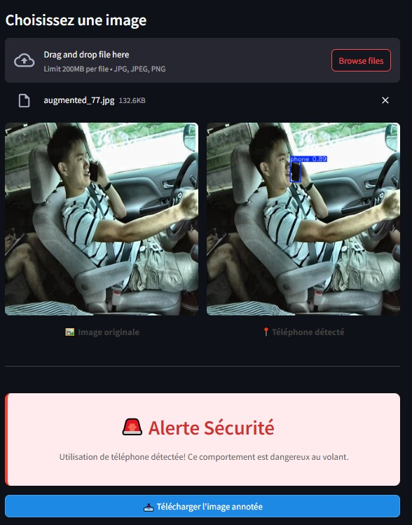

MajdaChouiekh
Intelligence Artificielle & Data Science
Étudiante en Master 2 Intelligence Artificielle, je conçois des solutions de Machine Learning, de vision par ordinateur et d’IA générative — de la donnée à l’application.
01 / Présentation
À propos de moi
Une approche pratique de la donnée, du modèle et de son utilisation.
Je suis Majda Chouiekh, étudiante en Master d’Excellence en Intelligence Artificielle (M2) à la Faculté des Sciences Ben M’Sik, Université Hassan II de Casablanca.
Mon parcours me permet de travailler sur la Data Science, le Machine Learning, le Deep Learning et l’IA générative. J’aime concevoir des solutions de bout en bout : explorer les données, entraîner des modèles et créer une interface qui les rend utiles.
Je recherche un stage PFE à partir de février 2027 en Data Science, Machine Learning, IA générative ou Data Engineering.
Ma démarche
- 01Comprendre le besoin et structurer les données.
- 02Construire et évaluer une solution d’IA adaptée.
- 03Intégrer le modèle dans une application exploitable.
- 04Documenter et améliorer les résultats.
02 / Réalisations
Projets sélectionnés.
Trois réalisations détaillées avec leurs interfaces et des captures de tests en IA générative, Computer Vision et Machine Learning.
Enterprise AI Copilot
Assistant IA pour interroger des documents d’entreprise en langage naturel, retrouver des passages pertinents et afficher les références aux sources.
- Recherche documentaire basée sur le RAG
- LLM local avec Ollama
- Réponses accompagnées de passages et de pages

Détection des comportements dangereux au volant
Analyse d’images de conduite : détection du téléphone, annotation de l’image et alertes de sécurité dans une interface interactive.
Voir les tests et la démarche
Prédiction de la qualité de l’eau
Application Random Forest pour classer la qualité de l’eau, complétée par un chatbot IA pour expliquer les résultats.
Découvrir le projet et les captures03 / Expertise
Compétences techniques
Des outils pour explorer, modéliser, construire et déployer des solutions basées sur les données.
Data Science & ML
Deep Learning & Vision
IA générative & NLP
MLOps & DevOps
Data Engineering & BI
Applications & outils
04 / Mon parcours
Formation & expérience
Un parcours académique en IA, complété par des expériences de développement et de relation client.
Formation
Master d’Excellence en Intelligence Artificielle
Faculté des Sciences Ben M’Sik · Université Hassan II, Casablanca
Licence d’Excellence en Intelligence Artificielle
Faculté des Sciences Ben M’Sik · Université Hassan II, Casablanca
BTS Développement des Systèmes d’Information
Centre préparatoire AL KENDI
Expériences professionnelles
Conseillère client francophone
Verdilink · Gestion des demandes et suivi client
Stagiaire développeuse web
VIA EXPERTS · Application de gestion des stagiaires
Stagiaire développeuse web
NINWID Technologies · Site vitrine responsive et MySQL
Certifications & formations
Ateliers AI Week — Machine Learning et AI × UI Design (avril 2026)
Certification AWS — Coursera
Langues
05 / Contact
Construisons quelque chose d’utile ensemble.
Disponible pour un stage PFE à partir de février 2027. Discutons d’un projet en Intelligence Artificielle, Data Science ou Machine Learning.